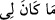
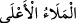
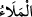
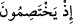
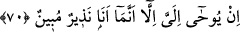
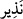
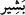
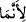
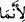

“Onlar” yâni Âdem, melekler ve İblis’ten ibâret yüce topluluk “orada tartışırken
benim mele-i a’lâ hakkında” yâni Âdem’in durumu ile ilgili olarak aralarında ne gibi
konuşma ve atışmaların cereyan ettiği hususunda daha önce kesinlikle “hiçbir bilgim
yoktu.” Buradaki “hiçbir” mânâsını istiğrak harfi (mâ’dan sonraki min harfi)
vermektedir.
Hz. Peygamber (s.a.) bu hususta hiçbir bilgim yoktu, buyuruyor. Çünkü hiçbir yerden
bir şey duymadan, yazılı bir metin mütâlaa etmeden Allah’ın “Ben yeryüzünde bir
halife yaratacağım” ifâdesine karşılık meleklerin “Orada bozgunculuk yapacak, kan
dökecek birini mi yaratacaksın?” (el-Bakara 2/30) gibi sözlerinden ve aralarında
cereyan eden diğer konuşmalardan haber vermesi vahiy dışında hiçbir yolla mümkün
değildir. Hz. Peygamber (s.a.) demek istiyor ki: Benim nübüvvet gibi bir özelliğim
bulunmamış olsaydı, onların tartışmalarını size haber veremezdim.
(
), ifâdesindeki ( ) sadece İmâm Âsım’ın râvîsi Hafs tarafından ( )’nın
fethası ile ( ) şeklinde okunurken, diğer imamlar ( ) şeklinde okumuşlardır.
Bunlara (
) “yüce topluluk” denmiş olması, bu konuşmayı yaptıkları sırada
semâda olmalarından ileri gelmektedir.
Râğıb der ki: (
), öyle bir topluluktur ki tek bir görüş üzerinde karar kılarlar ve
kendilerini bu hal üzere görenlerin gözlerinin ışıldamasına benliklerinin ise celâlet ve
bahâ ile dolmasına sebep olurlar.
(
)’daki ( ) edatı, makamın bulunmasını gerektirdiği mahzuf bir hâle
müteallıktır. Çünkü burada Hz. Peygamber’in (s.a.), yüce topluluğun bizzat kendilerini
değil, o anki durumlarını bilmediği ifâde edilmek istenmektedir. Hâl, aralarında geçen
konuşmaları ile meleklerin secde edip İblis’in kibirlenerek inkâr etmesi gibi fiilleri de
içine alır.
70. Ben ancak apaçık bir uyarıcı olduğum için bana vahyolunuyor.
Yüce topluluk ve benzeri gayba âid durumlar, bana, “ben ancak” O’nun nezdinden
gelip de uyarıcılık ve nebîliği “apaçık” delillerle zâhir olan bir nebî ve “bir uyarıcı
olduğum için bana vahyolunuyor.”
Uyarıcı (
) olmak, Hz. Peygamber’in (s.a.) bir sıfatı olduğu için kendisinden bu
şekilde bahsedilmiştir. Fakat o aynı zamanda bir müjdeleyici (
) de olmasına rağmen,
burada özellikle sadece “nezir” sıfatı zikrediliyor; çünkü makam inzâr makamı olduğu
için böyle yapılması gerekiyor.
(
)’nın hemzesi, (
) takdiri ile meftuh olup (
)’nın lâm’ı mahzuftur.
Keşfü’l-esrâr’da der ki: “Demişlerdir ki: Burada bahsi geçen nebe’ üç önemli